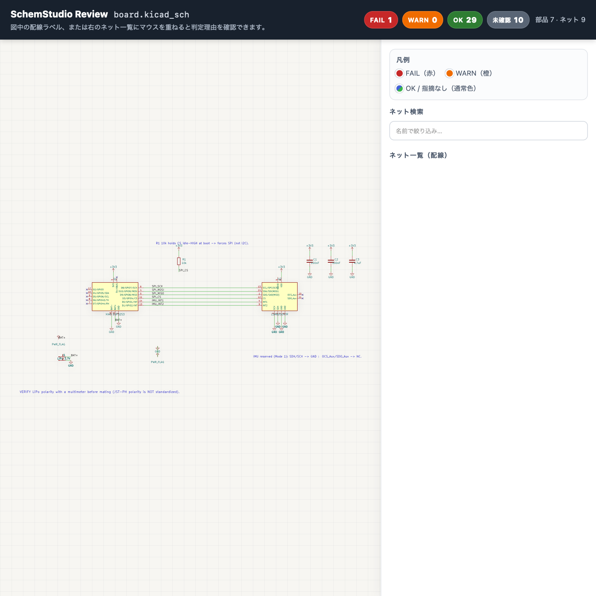
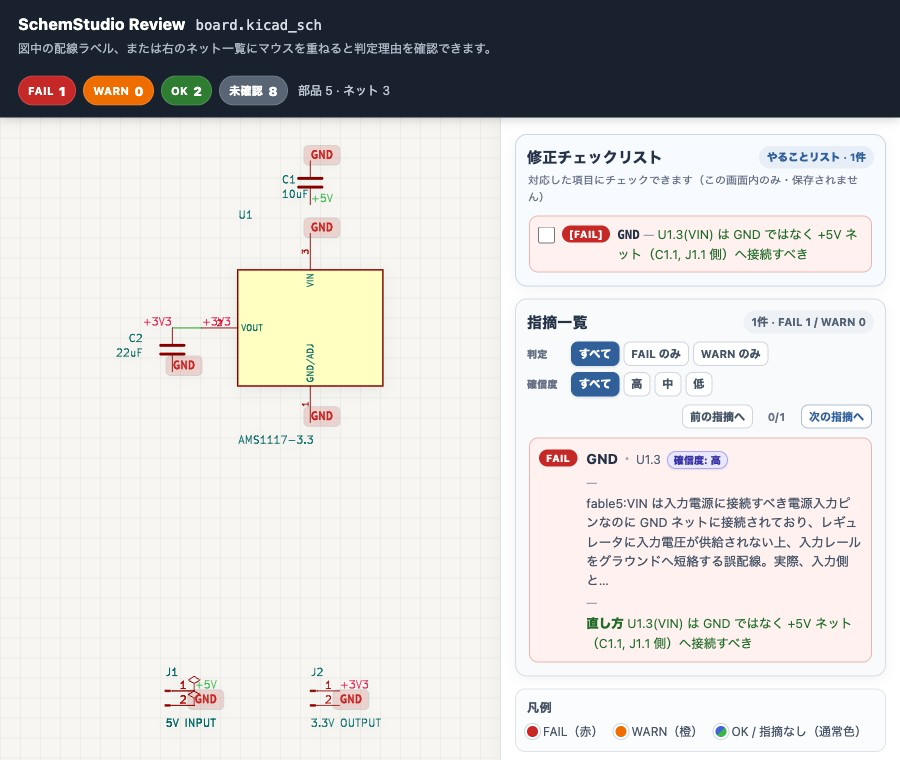

手元の回路図の「気になるところ」に印が付く、対話式の点検画面ができました（新コマンド review のはなし）
2026-07-24 · 広報担当 (pr_writer)
こんにちは、広報部です。 これまでの記事で、手元の回路図ファイルを「読む」機能と、AI が配線を部品の取扱説明書（データシート）と読み合わせて点検する機能を、別々に紹介してきました。 今日は、その 2 つがひとつながりになった新機能の話です。 回路図を渡すと、読み込みから点検までを続けて行い、どこが気になるかを印で示した画面を作って返します。 今回も、回路を知らない方にも分かるように書きます。
コマンド 1 つで、読み込みから画面まで
想定しているのは、こんな場面です。 手元に回路図がある。 自分で描いた図かもしれませんし、人から引き継いだ図かもしれません。 「この配線、ほんとうに合っているだろうか」と、ひとりで図面とにらめっこするのは心細いものです。
新しいコマンド review は、この場面のためのものです。
python3 -m studio review board.kicad_schこれ 1 つで、回路図を読み込み、AI がデータシートと読み合わせる点検を行い、結果を図の上に重ねた対話式の画面まで作ります（社内実測）。 できあがるのはブラウザで開ける普通の HTML ファイルで、特別なソフトの追加は要りません。 AI がデータシートを読み合わせるぶんの待ち時間はあります（配線ミスを見つけた実験の記事で使った回路では、点検は数分でした）。
できあがった画面
言葉で説明するより、実物を見てもらうのが早いと思います。

はめ込みの想像図ではなく、実際のソフトの画面です。 題材には、点検の様子が伝わるように、ミスをわざと仕込んだ回路図を読み込ませました。 画面上部の赤いバッジに、FAIL が 1 件と出ています。
見かたを順に説明します。
- 色：重大な問題の可能性が高い配線は赤（FAIL）、注意してほしい配線は橙（WARN）で強調されます。色の意味は画面の凡例にも書いてあります。
- 件数バッジ：画面の上部に、FAIL、WARN、OK、未確認がそれぞれ何件かのバッジが並びます。開いた瞬間に全体のようすが分かります。
- マウスで問い合わせ：図の中の配線や右側の一覧にマウスを載せると、その配線の判定、なぜそう判定したかの理由、直し方の提案、根拠になるデータシートの記述が表示されます。
- 検索：配線の多い回路でも、右側の検索欄で配線（ネット）を名前で絞り込めます。
バッジの「未確認」は、データシートが手元になく調べられなかったつなぎ目など、判定を保留した数です。 調べていないものを OK と数えない決まりは、これまでの記事と同じです。
私たちはこれを「対話式の画面」と呼んでいますが、チャットの吹き出しが出るわけではありません。 気になる場所を指させば、判定と理由と直し方が返ってくる。 図面との問答のような使い心地、という意味です。
「結局どこを直せばいい？」に答える、修正チェックリスト
指摘が何件も出ると、次に困るのは「で、結局どこから手を付ければいいの？」です。 そこで画面の右上に、修正チェックリスト（やることリスト）を用意しました。

これは、AI が「直し方」を示せた指摘だけを一か所に集めた一覧です。 重大なもの（FAIL）と、根拠がはっきりしているものを上に並べます。 一行が一つのやることで、「この配線を GND ではなく +5V につなぐ」のように、何をすればよいかがそのまま書いてあります。 対応が済んだらチェックを付けられ、済んだ項目には取り消し線が入るので、上から順に潰していけます（このチェックはその場限りで、保存はされません）。 行をクリックすると、図の中の該当する配線が光ります。どの線の話かを、言葉と図の両方で確かめられます。
その下の指摘一覧では、FAIL だけ・WARN だけといった絞り込みや、「前の指摘へ／次の指摘へ」で一件ずつ送る操作もできます。 たくさんの指摘を、端から順に、取りこぼしなく見ていくためのものです。
点検の中身も強化しました
画面が見やすくなっても、肝心の点検が頼りなければ意味がありません。 今回、AI が配線を見るときの目の付けどころも強化しました。 回路づくりで昔からありがちなミスの型を、点検の観点としてあらかじめ AI に渡しておく方式です。 たとえば、次のような型です。
- 電源のつなぎ忘れ：部品に電気を送る線が、どこにもつながっていない。
- プルアップ抜け：信号の線の中には、プルアップ抵抗という部品を通して電源へ軽く引っ張っておかないと、信号が定まらずふらつく種類のものがあります。それが必要な部品なのに、図のどこにも見当たらない。
- デカップリング不足：以前の記事で紹介した、IC（チップ）のそばに置く小さな貯水タンク役のコンデンサ（デカップリングコンデンサ）が足りない。
- 信号の向きの取り違え：「送る線」と「受ける線」のあべこべ。AI がこれを見つけた実験は、別の記事でくわしく紹介しています。
こうした観点をあらかじめ持たせることで、ありがちなミスを見落としにくくしました。 「見落とさない」ではなく「見落としにくく」と書くのは、AI の点検が毎回完璧とは限らないからです。
もうひとつの強化は、直し方の提案です。 問題を見つけたとき、間違いの指摘だけで終わらせず、「こう直すと良い」という提案まで返すようにしました。 たとえば「この線と 3.3V の間に 10kΩ のプルアップ抵抗を足すと安全」という調子です（3.3V は電源の線の名前です）。 ×が付いただけでは、次の一手までは分かりません。 直し方の案と、その根拠になるデータシートの記述が並んでいれば、確かめながら手を動かせます。 なお、直し方をデータシートから示せないときは、無理に提案を書きません。
正直なところ
いつものおことわりです。
- AI の点検は完璧ではありません。見落としも、的外れな指摘もありえます。この画面は設計者の見直しを手伝う道具で、最終判断は人が行います。
- 画面で確かめているのは、配線のつなぎ方がデータシートの記述と矛盾していないかです。実物の基板に組んで動くことまでを保証するものではありません。
- 記事中の画像は実際の画面ですが、題材の回路は、画面の様子を見せるためにミスをわざと仕込んで用意したものです。開発中に偶然見つかったミスを拾った話ではありません。
「作る」道具として始まった SchemStudio は、手元の図面を「読む」機能を経て、読んだ図面を一緒に「見直す」道具になりました。 使って分かったことは、良い話も悪い話も、これからもそのまま書きます。